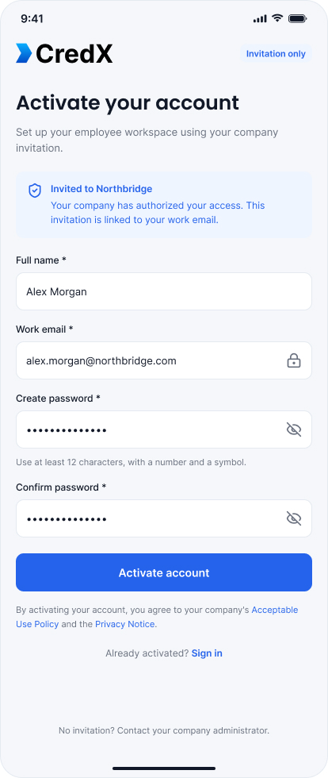
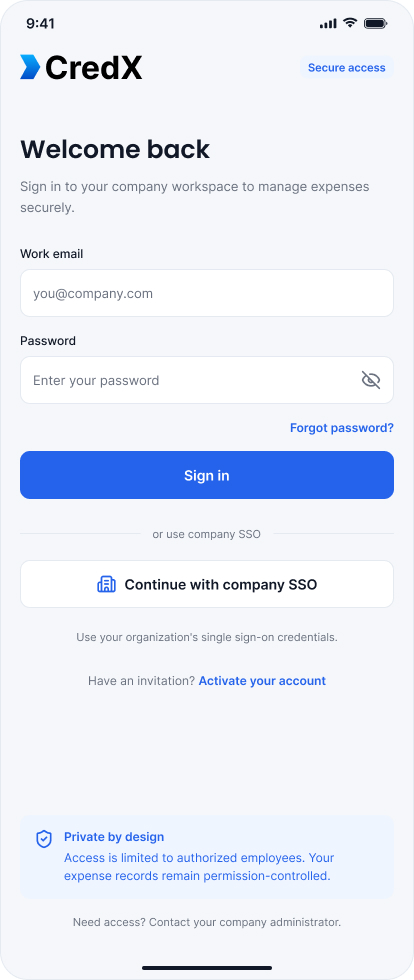

Clarity before submission
Understand eligibility, limits, documentation and approval status.
CASE STUDY · FINTECH
CredX is a premium enterprise fintech platform designed to simplify employee expenses while keeping identities, transactions and payment information private by design.
Internal enterprise expense management · Privacy-first · Role-based UX
The dashboard prioritizes decisions over unnecessary personal detail.
01 / Overview
Managing employee expenses can become complicated quickly. Employees need a simple way to submit and track expenses, while managers, finance teams and administrators need approvals, policy enforcement and reporting.
CredX bridges those needs in one centralized environment. The platform manages approved expenses such as business travel, meals, corporate events, client meetings, transportation and accommodation.
02 / The challenge
Privacy was not treated as a secondary security feature. It became a core product principle shaping information architecture, role permissions and the amount of detail visible on every screen.
Protect payment and reimbursement information from unnecessary exposure.
Give each role the right level of access and context.
Support different limits, eligibility rules and approval requirements.
Move expense tracking away from fragmented spreadsheets, emails and receipts.
Give finance useful organizational insights without exposing personal data.
03 / The problem
“How can we give every stakeholder the information they need—without revealing information they don't need?”
The experience needed to reduce uncertainty for employees, speed up manager approvals, simplify financial review and give administrators control over policies and permissions.
Understand eligibility, limits, documentation and approval status.
Scan policy status, purpose and documentation without unnecessary detail.
Monitor categories, exceptions, reimbursements and spending trends.
Configure categories, limits, eligibility, workflows and permissions.
04 / The solution
Sensitive employee and payment information is exposed only to authorized users through role-based access and progressive disclosure.
Eligibility, limits, required documents and approval workflows appear at the moment they matter.
Employees, managers, finance and administrators receive different experiences instead of one overloaded dashboard.
The UI prioritizes “What do I need to know?” before “What information is available?”
05 / My role
I was responsible for the end-to-end UX and UI design of the CredX platform.
Discovery, UX strategy, requirements and role definition.
User flows, sitemap, information architecture and role-based journeys.
Dashboards, workflows, high-fidelity UI and responsive layouts.
Components, states, typography, colors and reusable patterns.
Interaction design, usability refinement and product flows.
Responsive specifications and implementation-ready UI decisions.
06 / Understanding the user
07 / Key user pain points
08 / Design goals
Minimize exposure of employee and payment information.
Reduce the number of steps required to submit an expense.
Show policy information at the moment it matters.
Show only information relevant to the user's role.
Every dashboard should answer: What needs my attention?
Use clear charts, categories, statuses and summaries.
Support new categories, policies, roles and workflows.
09 / Product flows
Secure, minimal and role-aware authentication.
Travel, meals, events, transport or other.
Enter details and upload supporting documents.
Communicate eligibility and limits before submission.
Manager reviews focused information and takes action.
Employee tracks status without unnecessary payment detail.
10 / Key screens
The uploaded CredX product screens are placed alongside the case-study narrative so the work is grounded in the actual interface—not just the process behind it.
Access & onboarding



Employee expense journey


Manager & approval experience


Finance & administration


11 / Design system
12 / Result
Employee and payment information is surfaced according to role and permission.
Employees can understand policies, submit expenses and track status from one platform.
Managers receive focused information and clear actions.
Finance teams gain organizational-level insights through dashboards and analytics.
Expense policies become part of the product experience.
The design system can grow with categories, policies, roles and workflows.
Final takeaway
Simple for employees. Powerful for finance. Private by design.